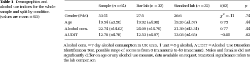

<?xml version="1.0" encoding="UTF-8"?>
<table title="table1" id="table1" class="tabcontent" xmlns="http://www.w3.org/1999/xhtml">
 <tr>
  <td>
   
   <p>corpus-oa-validation/10.1007_s00213-016-4518-0/tables/table1/table.svg.png</p>
  </td>
  <td>
   <table class="table">
    <caption/>
    <tr>
     <th/>
     <th class="cell">alcohol use indices for the whole sample and split by condition </th>
     <th class="cell">Sample (n = 64) </th>
     <th class="cell">Bar lab (n = 32) </th>
     <th class="cell">Standard lab (n = 32) </th>
     <th class="cell">t(62) _{2} </th>
     <th class="cell">p </th>
    </tr>
    <tr>
     <td class="cell">(values are mean ± SD)</td>
     <td class="cell">Gender (F:M)</td>
     <td class="cell">53:11</td>
     <td class="cell">27:5</td>
     <td class="cell">26:6</td>
     <td class="cell">χ = .11</td>
     <td class="cell">.74</td>
    </tr>
    <tr>
     <td class="empty"/>
     <td class="cell">Age</td>
     <td class="cell">19.54 (±3.50)</td>
     <td class="cell">19.92 (±4.90)</td>
     <td class="cell">19.20 (±1.37)</td>
     <td class="cell">0.78</td>
     <td class="cell">.44</td>
    </tr>
    <tr>
     <td class="empty"/>
     <td class="cell">Alcohol cons.</td>
     <td class="cell">22.74 (±14.03)</td>
     <td class="cell">24.09 (±14.79)</td>
     <td class="cell">21.39 (±13.31)</td>
     <td class="cell">0.77</td>
     <td class="cell">.44</td>
    </tr>
    <tr>
     <td class="empty"/>
     <td class="cell">AUDIT</td>
     <td class="cell">12.78 (±4.78)</td>
     <td class="cell">12.53 (±4.97)</td>
     <td class="cell">13.03 (±4.65)</td>
     <td class="cell">−0.05</td>
     <td class="cell">.62</td>
    </tr>
   </table>
   <p>corpus-oa-validation/10.1007_s00213-016-4518-0/tables/table1/table.svg.html</p>
  </td>
 </tr>
</table>
